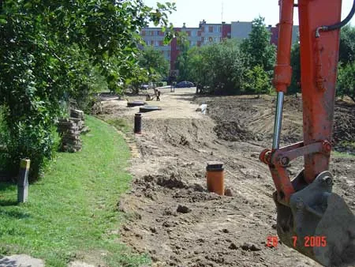
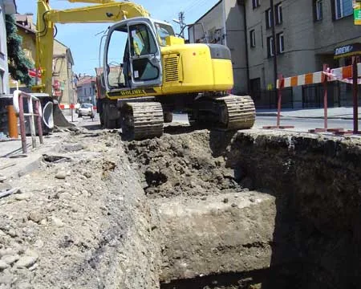
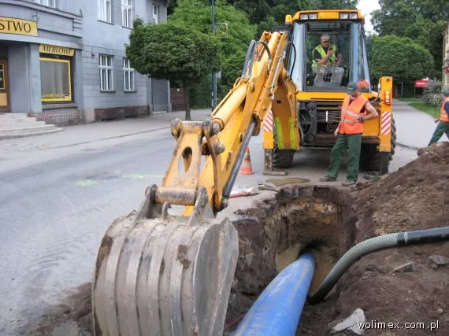
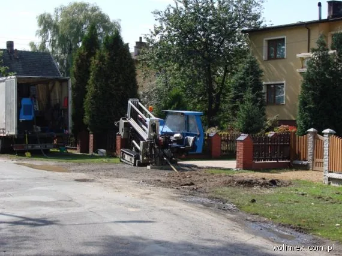
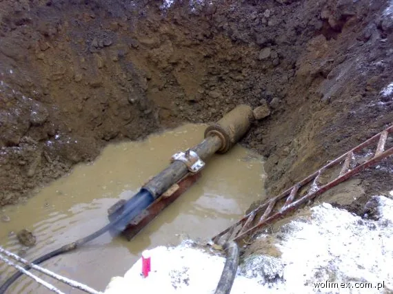
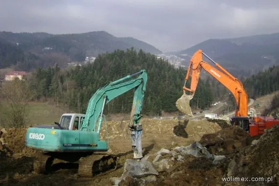

Realizacje
Wybrane inwestycje z listy na obecnej stronie firmy: sieci kanalizacyjne, wodociągowe i roboty hydrotechniczne, głównie dla gmin, miast i przedsiębiorstw wodociągowych.
Pokazano 35 realizacji
- 2009Kanalizacja sanitarna w Pszczynie, etap I (zaprojektowanie i wykonanie)Inwestor: Gmina Pszczynaok. 61 000 m kanalizacji i ok. 74 000 m wodociąguKanalizacja sanitarna
- 2008Kanalizacja sanitarna na terenie Gminy Miasto Tarnów (zaprojektowanie i wykonanie)Inwestor: Tarnowskie Wodociągiok. 41 000 mbKanalizacja sanitarna
- 2007Kanalizacja sanitarna i oczyszczalnia ścieków w Międzybrodziu BialskimInwestor: Gmina Czernichów35 000 mb sieci, oczyszczalnia Q = 600 m³/dKanalizacja sanitarna
- 2007Kanalizacja sanitarna w dzielnicy Hałcnów, Bielsko-BiałaInwestor: AQUA Bielsko-Białaok. 33 000 mbKanalizacja sanitarna
- 2007Kanalizacja sanitarna w dzielnicy Lipnik, Bielsko-BiałaInwestor: AQUA Bielsko-Białaok. 27 000 mbKanalizacja sanitarna
- 2007Sieć rozdzielcza kanalizacji sanitarnej, dzielnica Zawada w Nowym SączuInwestor: Miasto Nowy Sącz15 888 mbKanalizacja sanitarna
- 2006System kanalizacyjny Gminy Mucharz, sieć rozdzielcza w 4 etapach4 etapyKanalizacja sanitarna
- 2004-2005Rozwój Gospodarczy Tarnowa: kanalizacja podciśnieniowo-grawitacyjna i modernizacja drógok. 97 881 mb, drogi 71 288 m²Kanalizacja sanitarna
- 2003-2006Rozwój Gospodarczy Gminy Brzesko, etapy I-IIIok. 114 039 mbKanalizacja sanitarna
- 2003-2006Kanalizacja sanitarna w Kasince Małej (zlewnia Raby)ok. 61 684 mbKanalizacja sanitarna
- 1998-2000Kanalizacja sanitarna wsi Skomielna Biała, ochrona zlewni Raby i Zbiornika Dobczyckiegook. 39 334 mbKanalizacja sanitarna
- 2002Budowa kanalizacji sanitarnej w Kamienicyok. 15 576 mbKanalizacja sanitarna
- 2004Oczyszczalnia ścieków w Wetlinie z siecią kanalizacji sanitarnejok. 11 013 mbKanalizacja sanitarna
- 2001-2003Kanalizacja w Rokicinach i Rabie Wyżnej, zadanie IIok. 8 914 mbKanalizacja sanitarna
- 2003-2004Kanalizacja Rabki, osiedle Traczykówkaok. 8 544 mbKanalizacja sanitarna
- 2004-2005Kanalizacja Koniny, Poręby Wielkiej, Koninek i części Niedźwiedziaok. 6 825 mbKanalizacja sanitarna
- 2001-2002Kanalizacja Rabki, ul. Krakowska i Sądeckaok. 5 582 mbKanalizacja sanitarna
- 2004Kanalizacja Łącko, Kiczonki, Zagorzynok. 4 885 mbKanalizacja sanitarna
- 2004-2005Kolektory główne w Mucharzu, budowa Zbiornika Świnna Porębaok. 4 240 mbKanalizacja sanitarna
- 2002Kanalizacja w Czarnym Dunajcu i Kamieńcuok. 3 559 mbKanalizacja sanitarna
- 2004Kanalizacja osiedla domów jednorodzinnych w Limanowej (ul. J. Marka, Flizaka i inne)ok. 2 007 mbKanalizacja sanitarna
- 2006Sieć wodociągowa w Jaszczurowej, system wodociągowy Gminy Mucharz12 575 mb (PE 160, PVC 90-160)Sieci wodociągowe
- 2006Ujęcie drenażowe i żelbetowy zbiornik wyrównawczy w Jaszczurowejujęcie i zbiornikSieci wodociągowe
- 2006Sieć wodociągowa w ul. Bora-Komorowskiego w Nowym Sączuodcinek sieciSieci wodociągowe
- 2004System wodociągowy i kanalizacja osiedla domów jednorodzinnych w LimanowejosiedleSieci wodociągowe
- 2006Remont stopni na rzece Kamienica Nawojowska w Nowym Sączukm 4+873 i 5+344Roboty hydrotechniczne
- 2006Remont zabudowy i stabilizacja dna potoku Mordarka w Limanowejkm 1+427 - 4+190Roboty hydrotechniczne
- 2006Zabezpieczenie brzegów i udrożnienie potoku Łubinka w Nowym Sączukm 2+200 - 4+230Roboty hydrotechniczne
- 2006Stabilizacja osuwisk: Młyńczyska pod Przysłopem i Pisarzowa3 osuwiskaRoboty hydrotechniczne
- 2003-2004Zabezpieczenie brzegów i udrożnienie potoku Naściszówka (Librantowa, Naściszowa)km 1+360 - 4+500Roboty hydrotechniczne
- 2002-2003Remont żłobu na potoku Słony w Rabce-Zdrojukm 1+431 - 2+136Roboty hydrotechniczne
- 2002-2003Usuwanie szkód powodziowych na potoku Stradomka w PogorzanachRoboty hydrotechniczne
- 1999-2001Regulacja potoku Kocierzanka, stopnie i rampy betonowe w ŁękawicyRoboty hydrotechniczne
- 1997-2000Regulacja potoku Laskowianka w LaskowejRoboty hydrotechniczne
- 1995-1997Tor kajakowy z zapleczem w Wietrznicach (gm. Łącko)Roboty hydrotechniczne
Z placu budowy





